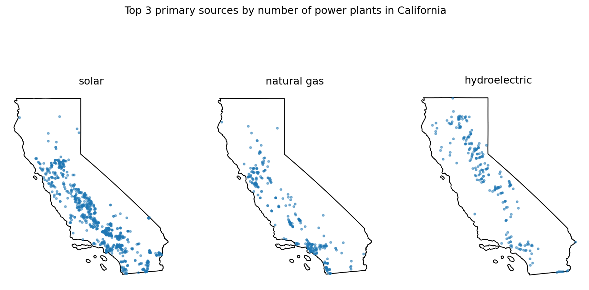
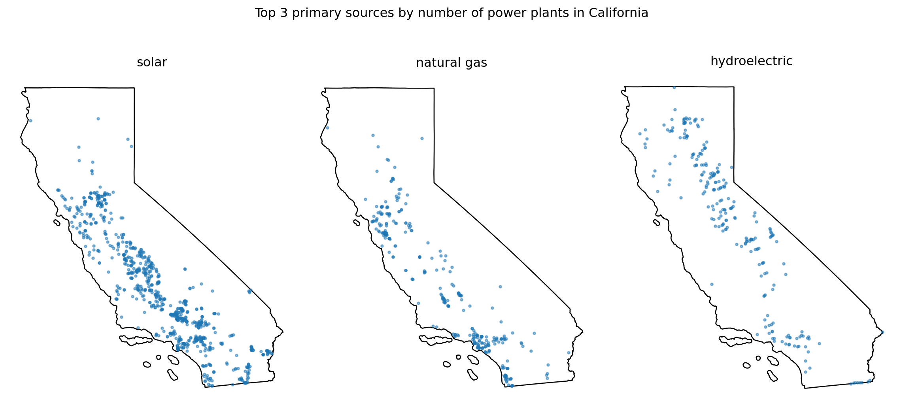
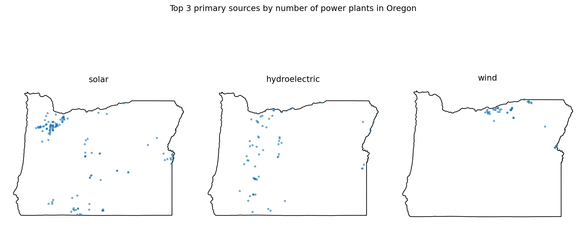
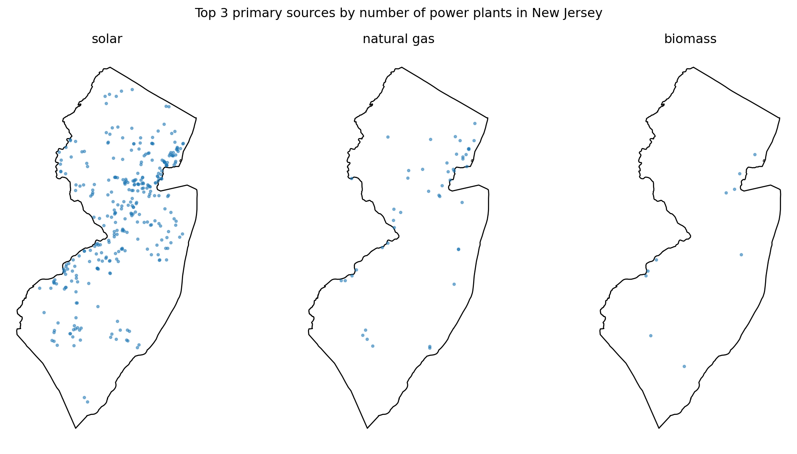
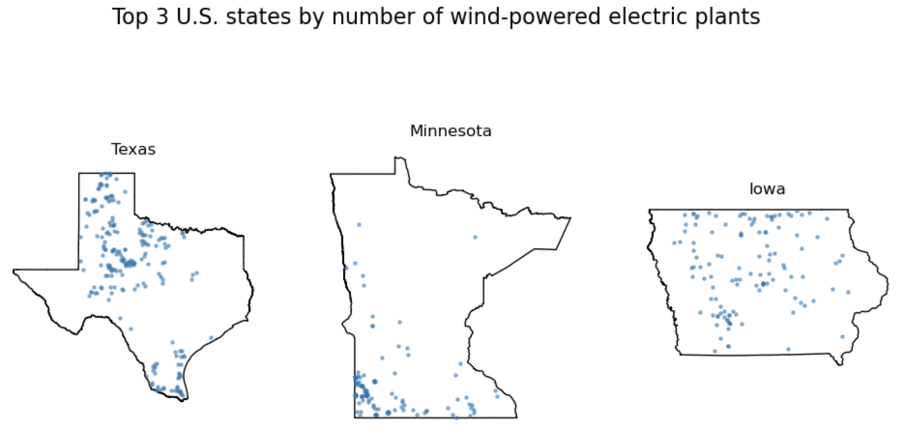
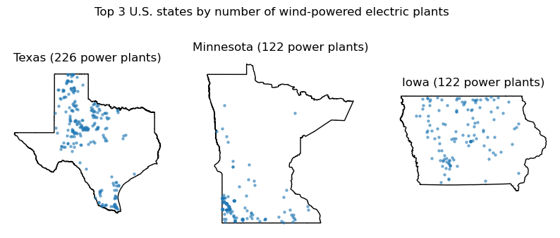

def greet():
"""Print a greeting message."""
print("Hello, welcome to the class!")
greet()Hello, welcome to the class!In this lesson we will learn how to write our own functions to reuse code. We will go over the syntax of a function, how to check its inputs, and a step-by-step strategy to turn code that works for one example into a function that works for any input.
By the end of this lesson, students will be able to:
assert to check a function’s inputsIn Python, functions are reusable blocks of code designed to perform specific tasks. They help streamline your code by allowing you to avoid repetition, improve readability, and make maintenance easier.
The general syntax for defining a function is the following:
def function_name(parameter_1, ..., parameter_n):
"""Docstring"""
<body of the function>
return value # Depending on the functionWe define a function using:
def keyword, followed by the function name, parentheses (which can contain parameters), and a colon.docstring. This is a string, written between triple quotes """, that describes what the function does. It must be indented. Unlike a comment, Python stores the docstring with the function, so you can read it with help(function_name).return keyword is used to allow the function to return values. Functions that do not return any values don’t need to have a return keyword.Let’s see two simple examples just to get familiar with the syntax. In the first one we have a simple function with a one-line docstring, no parameters, and no return values.
def greet():
"""Print a greeting message."""
print("Hello, welcome to the class!")
greet()Hello, welcome to the class!The second one has a single parameter and a more detailed docstring with information about the arguments and return values.
def calculate_area(radius):
"""
Calculate the area of a circle given its radius.
Args:
radius (float): The radius of the circle.
Returns:
float: The area of the circle, calculated as π * radius^2.
"""
area = 3.14159 * radius ** 2
return area
# Using our function
for radius in [1, 2, 3, 4, 5]:
area = calculate_area(radius)
print(f"The area of a circle with radius {radius} is {area:.2f}")The area of a circle with radius 1 is 3.14
The area of a circle with radius 2 is 12.57
The area of a circle with radius 3 is 28.27
The area of a circle with radius 4 is 50.27
The area of a circle with radius 5 is 78.54We can read the docstring of our function using help():
help(calculate_area)Help on function calculate_area in module __main__:
calculate_area(radius)
Calculate the area of a circle given its radius.
Args:
radius (float): The radius of the circle.
Returns:
float: The area of the circle, calculated as π * radius^2.
assertSometimes we want a function to stop and give a helpful message when it gets an input that doesn’t make sense. We can do this with an assert statement, like we did to check our data in the previous lesson:
assert <condition that should be True>, "Message explaining what went wrong"Let’s update calculate_area so it gives an error when the radius is negative:
def calculate_area(radius):
"""
Calculate the area of a circle given its radius.
Args:
radius (float): The radius of the circle.
Returns:
float: The area of the circle, calculated as π * radius^2.
"""
# Check that radius is not negative
assert radius >= 0, f"radius must be non-negative, got {radius}"
area = 3.14159 * radius ** 2
return area
# Check if the assertion works
calculate_area(-2)--------------------------------------------------------------------------- AssertionError Traceback (most recent call last) Cell In[28], line 18 15 return area 17 # Check if the assertion works ---> 18 calculate_area(-2) Cell In[28], line 12, in calculate_area(radius) 2 """ 3 Calculate the area of a circle given its radius. 4 (...) 9 float: The area of the circle, calculated as π * radius^2. 10 """ 11 # Check that radius is not negative ---> 12 assert radius >= 0, f"radius must be non-negative, got {radius}" 14 area = 3.14159 * radius ** 2 15 return area AssertionError: radius must be non-negative, got -2
In production code, input checks like this one are usually written with raise instead of assert, but assert works well at this stage. You can learn more about raise here. The core idea is that you can build in checks to test the inputs and outputs of your functions.
A global variable is a variable defined outside of any function, for example directly in a notebook cell. Functions can use global variables even if we don’t pass them as parameters. Let’s see why this can be a problem:
threshold = 30 # °C
def is_hot(temp):
"""Check if a temperature is above the threshold."""
return temp > threshold
print(is_hot(32)) # True
# Later in the notebook, for another analysis...
threshold = 50
print(is_hot(32)) # False: same input, different answer!True
Falseis_hot uses the global variable threshold, so its result changed even though we passed the same temperature. We can fix this by making threshold a parameter:
def is_hot(temp, threshold):
"""Check if a temperature is above a threshold."""
return temp > threshold
print(is_hot(32, 30)) # True
print(is_hot(32, 50)) # FalseTrue
FalseNow the result depends only on what we pass to the function.
The best practice is for every variable used inside a function to be either a parameter or defined inside the function.
We’ll come back to this when we write our own functions.
We’ll practice creating functions using the power plants and US states datasets from the previous lesson.
import os
import pandas as pd
import geopandas as gpd
import matplotlib.pyplot as plt
# Display all columns when looking at dataframes
pd.set_option("display.max_columns", None)
# --------------------------------------------------
# Import power plants data
URL = 'https://raw.githubusercontent.com/carmengg/eds-220-book/refs/heads/main/data/power_plants_epsg4269.csv'
power_plants = pd.read_csv(URL)
# Import states data
fp = os.path.join('data','tl_2026_us_state','tl_2026_us_state.shp')
states = gpd.read_file(fp)
states.columns = states.columns.str.lower()
# --------------------------------------------------
# Create geometry column for power plants
points = gpd.points_from_xy(power_plants['longitude'],
power_plants['latitude'])
# Convert power plants DataFrame to GeoDataFrame
power_plants = gpd.GeoDataFrame(power_plants, # Data
geometry=points, # Specify geometry column
crs='EPSG:4269' # Specify CRS
)In the previous lesson we solved the following exercise using a for loop with zip() to create subplots of California’s top 3 primary sources by number of power plants.
# --- Find top sources by number of plants
ca_power_plants = power_plants[power_plants['state']=='California']
ca_top_sources = (ca_power_plants['primsource']
.value_counts()
.index[:3]
.tolist()
)
# --- Plot
# Select CA state boundary
ca_boundary = states[states['name'] == 'California']
# Create subplots for each top source in a single figure
fig, ax = plt.subplots(figsize=(12,6), nrows=1, ncols=3)
for axis, source in zip(ax, ca_top_sources): # Iterate over subplots and energy sources
axis.set_title(source)
axis.axis('off')
ca_boundary.plot(ax=axis,
color='none')
# Subset power plants by source and plot
source_subset = ca_power_plants[ca_power_plants['primsource'] == source]
source_subset.plot(ax=axis,
markersize=5,
alpha=0.5)
fig.suptitle("Top 3 primary sources by number of power plants in California")
plt.show()
Our previous code “hard-codes” California, so it only works for that state. Next, we want to keep exploring the top 3 primary sources by number of power plants for different states. This is a scenario where creating functions can be useful.
Let’s make a function that finds the top 3 primary sources by number of power plants for any state! My general advice to break down this problem is:
My recommendation is to first write code that solves the problem just for a specific example (e.g., California). Don’t even think about the function yet.
In our case we need to:
Subset power plants for the given state
Count how many times each power source appears in that subset
Sort counts and select the top 3; this should be a list
You can do this part mentally, but it can be useful to actually write down what steps you need to take.
Let’s implement steps 1-3.
ca_power_plants = power_plants[power_plants['state']=='California']
ca_top_sources = (ca_power_plants['primsource']
.value_counts()
.index[:3]
.tolist()
)
ca_top_sources['solar', 'natural gas', 'hydroelectric']Great, now that we have code that works for a specific example, let’s turn it into a function!
In our case, we need to have the function work for any state, not just California. So we need to generalize the state name to be its own variable. We do this by replacing 'California' with a variable called state and re-run things to make sure it still works.
state = 'California'
state_power_plants = power_plants[power_plants['state']==state]
state_top_sources = (state_power_plants['primsource']
.value_counts()
.index[:3]
.tolist()
)
state_top_sources['solar', 'natural gas', 'hydroelectric']Now we can wrap the code into a function. The variable becomes a parameter for the function. Make sure everything is properly indented.
def top3_sources(state):
state_power_plants = power_plants[power_plants['state']==state]
state_top_sources = (state_power_plants['primsource']
.value_counts()
.index[:3]
.tolist()
)
return state_top_sourcesWe may now reuse this function as much as we want!
print('Top 3 primary sources by number of power plants in Division 2 states:')
for state in ['New Jersey', 'New York', 'Pennsylvania']:
print(f"{state}: {', '.join(top3_sources(state))}")Top 3 primary sources by number of power plants in Division 2 states:
New Jersey: solar, natural gas, biomass
New York: solar, hydroelectric, natural gas
Pennsylvania: natural gas, solar, petroleumHere we ask: is every variable used inside the function either a parameter or defined inside the function?
The only variable used in the function that is not defined in the function’s body or passed as a parameter is power_plants. We turn it into a parameter called plants:
def top3_sources(state, plants):
state_plants = plants[plants['state']==state]
top_sources = (state_plants['primsource']
.value_counts()
.index[:3]
.tolist()
)
return top_sourcesNotice that we named the data frame parameter plants instead of power_plants. Inside the function, plants is whatever data frame we pass when we call it. Giving parameters different names from the variables in our notebook makes sure the function uses only what we pass to it, and doesn’t depend on a variable that happens to exist outside of it.
Finally, we can add a docstring to explain what the function does, its parameters, and its return values. We also use assert to check that the state is in the data.
def top3_sources(state, plants):
"""
Find the top 3 primary sources by number of power plants in a given state.
Args:
state (str): The US state we want information about.
plants (pd.DataFrame): DataFrame containing data
on power plants, with at least 'state' and 'primsource' columns.
Returns:
list: The 3 primary sources with the most power plants in the state, from most to fewest plants.
"""
# Check that state is in the plants data
# Note: `in` on a Series checks the index, so we use .values to check the values
assert state in plants['state'].values, f"{state} is not in the 'state' column of plants"
state_plants = plants[plants['state']==state]
state_top_plants = (state_plants['primsource']
.value_counts()
.index[:3]
.tolist()
)
return state_top_plantsprint('Top 3 primary sources by number of power plants in Division 2 states:')
for state in ['New Jersey', 'New York', 'Pennsylvania']:
print(f"{state}: {', '.join(top3_sources(state, power_plants))}")Top 3 primary sources by number of power plants in Division 2 states:
New Jersey: solar, natural gas, biomass
New York: solar, hydroelectric, natural gas
Pennsylvania: natural gas, solar, petroleumLet’s check that our error works with a misspelled state name:
top3_sources('Californa', power_plants)--------------------------------------------------------------------------- AssertionError Traceback (most recent call last) Cell In[40], line 1 ----> 1 top3_sources('Californa', power_plants) Cell In[38], line 16, in top3_sources(state, plants) 2 """ 3 Find the top 3 primary sources by number of power plants in a given state. 4 (...) 11 list: The 3 primary sources with the most power plants in the state, from most to fewest plants. 12 """ 14 # Check that state is in the plants data 15 # Note: `in` on a Series checks the index, so we use .values to check the values ---> 16 assert state in plants['state'].values, f"{state} is not in the 'state' column of plants" 18 state_plants = plants[plants['state']==state] 19 state_top_plants = (state_plants['primsource'] 20 .value_counts() 21 .index[:3] 22 .tolist() 23 ) AssertionError: Californa is not in the 'state' column of plants
Create a function called power_source_counts that, given a power source, returns a Series with the counts of power plants by state that use that source.
Follow the steps:
Let’s do one more example and create a function that will produce a plot of the top 3 primary sources by number of power plants for a given state.
We can start with the code we had for California. We will use our top3_sources function instead of the code that found the ca_top_sources list.
# CA top 3 primary sources by number of power plants
ca_top_sources = top3_sources('California', power_plants)
# Select CA power plants and boundary
ca_power_plants = power_plants[power_plants['state'] == 'California']
ca_boundary = states[states['name'] == "California"]
# Create subplots for each top source in a single figure
fig, ax = plt.subplots(figsize=(12,6), nrows=1, ncols=3)
for axis, source in zip(ax, ca_top_sources): # Iterate over subplots and energy sources
axis.set_title(source)
axis.axis('off')
ca_boundary.plot(ax=axis,
color='none')
# Subset power plants by source and plot
source_subset = ca_power_plants[ca_power_plants['primsource'] == source]
source_subset.plot(ax=axis,
markersize=5,
alpha=0.5)
fig.suptitle("Top 3 primary sources by number of power plants in California")
plt.tight_layout()
plt.show()
Basically anything where we are using California specifically.
First update all the 'California' strings to use a variable called state instead.
Then, update all variables that have ca_ to be more general (e.g., state_power_plants, state_boundary).
state = 'California'
# Find top 3 primary sources by number of power plants
state_top_sources = top3_sources(state, power_plants)
# Select power plants and boundary
state_power_plants = power_plants[power_plants['state'] == state]
state_boundary = states[states['name'] == state]
# Create subplots for each top source in a single figure
fig, ax = plt.subplots(figsize=(12,6), nrows=1, ncols=3)
for axis, source in zip(ax, state_top_sources): # Iterate over subplots and energy sources
axis.set_title(source)
axis.axis('off')
state_boundary.plot(ax=axis,
color='none')
# Subset power plants by source and plot
source_subset = state_power_plants[state_power_plants['primsource'] == source]
source_subset.plot(ax=axis,
markersize=5,
alpha=0.5)
fig.suptitle(f"Top 3 primary sources by number of power plants in {state}")
plt.tight_layout()
plt.show()
def plot_top3_power_sources(state):
# Find top 3 primary sources by number of power plants
state_top_sources = top3_sources(state, power_plants)
# Select power plants and boundary
state_power_plants = power_plants[power_plants['state'] == state]
state_boundary = states[states['name'] == state]
# Create subplots for each top source in a single figure
fig, ax = plt.subplots(figsize=(12,6), nrows=1, ncols=3)
for axis, source in zip(ax, state_top_sources): # Iterate over subplots and energy sources
axis.set_title(source)
axis.axis('off')
state_boundary.plot(ax=axis,
color='none')
# Subset power plants by source and plot
source_subset = state_power_plants[state_power_plants['primsource'] == source]
source_subset.plot(ax=axis,
markersize=5,
alpha=0.5)
fig.suptitle(f"Top 3 primary sources by number of power plants in {state}")
plt.tight_layout()
plt.show()plot_top3_power_sources('Oregon')
To find these, ask yourself: what variables are being used inside the function that were neither (1) passed as parameters nor (2) defined inside the function?
Here, power_plants and states are global variables, so we turn them into the parameters plants and boundaries.
def plot_top3_power_sources(state, plants, boundaries):
# Find top 3 primary sources by number of power plants
state_top_sources = top3_sources(state, plants)
# Select power plants and boundary
state_power_plants = plants[plants['state'] == state]
state_boundary = boundaries[boundaries['name'] == state]
# Create subplots for each top source in a single figure
fig, ax = plt.subplots(figsize=(12,6), nrows=1, ncols=3)
for axis, source in zip(ax, state_top_sources): # Iterate over subplots and energy sources
axis.set_title(source)
axis.axis('off')
state_boundary.plot(ax=axis,
color='none')
# Subset power plants by source and plot
source_subset = state_power_plants[state_power_plants['primsource'] == source]
source_subset.plot(ax=axis,
markersize=5,
alpha=0.5)
fig.suptitle(f"Top 3 primary sources by number of power plants in {state}")
plt.tight_layout()
plt.show()plot_top3_power_sources('Oregon', power_plants, states)
We add a docstring and use assert to check that the state is in boundaries. We don’t need to check plants, since top3_sources already does that for us.
def plot_top3_power_sources(state, plants, boundaries):
"""
Plot the power plants of a given state for its top 3 primary sources
by number of power plants.
Args:
state (str): The US state we want to plot.
plants (gpd.GeoDataFrame): GeoDataFrame containing data
on power plants, with at least 'state' and 'primsource' columns.
boundaries (gpd.GeoDataFrame): GeoDataFrame with the US states boundaries,
with at least a 'name' column.
"""
# Check that state is in boundaries
# (top3_sources already checks that state is in plants)
assert state in boundaries['name'].values, f"{state} is not in the 'name' column of boundaries"
# Find top 3 primary sources by number of power plants
state_top_sources = top3_sources(state, plants)
# Select power plants and boundary
state_power_plants = plants[plants['state'] == state]
state_boundary = boundaries[boundaries['name'] == state]
# Create subplots for each top source in a single figure
fig, ax = plt.subplots(figsize=(12,6), nrows=1, ncols=3)
for axis, source in zip(ax, state_top_sources): # Iterate over subplots and energy sources
axis.set_title(source)
axis.axis('off')
state_boundary.plot(ax=axis,
color='none')
# Subset power plants by source and plot
source_subset = state_power_plants[state_power_plants['primsource'] == source]
source_subset.plot(ax=axis,
markersize=5,
alpha=0.5)
fig.suptitle(f"Top 3 primary sources by number of power plants in {state}")
plt.tight_layout()
plt.show()We can now use our function to produce plots for any state:
plot_top3_power_sources('New Jersey', power_plants, states)
Writing functions can feel challenging at first, but with practice, they’ll start to come naturally whenever you find yourself reusing blocks of code. Keep experimenting and practicing—it gets easier with each function you write!

Create a function that, for a given power source, produces a plot like this one. Many ways of doing it, a hint could be to zip three things together: the axes, the top 3 states, and the counts of power plants in those states.
# Example of more than two zipped items
for a, b, c in zip([1,2,3], ['x','y','z'], [10,20,30]):
print(a, b, c)